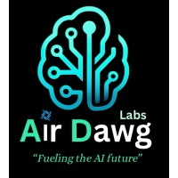

Product management
PRDs, BRDs, FSDs, roadmaps, user stories, acceptance criteria, grooming, UAT, stakeholder coordination, and metrics thinking.
Anudeep Batchu
Available for product management, full-stack, and LLM engineering roles
Computer Science Graduate, LLM Engineer Intern at AirDawg Labs, and former EY Product Management Intern who can define the problem, write the PRD, design the flow, and build the React, Flutter, FastAPI, cloud, and LLM systems behind it.
The fastest read on where I fit, what I have shipped, and why the work translates across product, full-stack, LLM, design, and engineering teams.
My through-line is customer problem to product decision to production system. I can sit with business teams, write the spec, map the workflow, and still build the API, mobile screen, LLM workflow, or dashboard.
PRDs, BRDs, FSDs, roadmaps, user stories, acceptance criteria, grooming, UAT, stakeholder coordination, and metrics thinking.
React, Next.js, Flutter, FastAPI, Flask, Docker, Cloud Run, Firebase, Vercel, SQL, and analytics pipelines.
Gemini-powered document workflows, retrieval UX, prompt-to-product decisions, evaluation metrics, and AI features that solve user jobs.
Each story is structured for a recruiter skim: problem, move, proof, and toolchain.
Product management case study + prototype
Framed a DPDP-era rider trust problem, selected a privacy-by-default POC, and built the case around a live clickable prototype that shows how ride coordination can work without exposing persistent identifiers.
Product strategy / DPDP / UX prototype / metrics / rollout planning
Full-stack AI product
Built a Flutter and cloud-native healthcare system around prescription OCR, generic alternatives, interaction checks, multilingual support, Firebase Auth, and Cloud Run deployment.
Flutter / Flask / Gemini / Docker / GCP Cloud Run / Firebase
LLM engineering
Built a FastAPI document analyzer that turns long documents into grounded answers and reduced information retrieval time by 90%.
LLM API / FastAPI / Python / document parsing / retrieval UX
Product + full-stack
Defined the workflow, then built a collaboration platform with decision CRUD, voting, threaded comments, AI chatbot, analytics dashboards, team workspaces, JWT, and RBAC.
Next.js 14 / FastAPI / SQLite / Docker / Vercel
Backend systems
Designed a production-grade CLI queue with multiprocessing workers, priority jobs, scheduled jobs, exponential-backoff retries, a dead letter queue, SQLite persistence, graceful shutdown, and monitoring.
Python / SQLite / CLI / multiprocessing
Useful when a team needs someone who can translate between product, design, full-stack engineering, LLM workflows, and data without losing the thread.
Customer feedback analysis, PRDs, feature prioritization, roadmaps, launch risks, NSMs, guardrails, and stakeholder grooming.
Gemini integrations, document workflows, answer grounding, prompt UX, retrieval flows, and practical AI evaluation.
React, Next.js, Flutter, Dart, FastAPI, Flask, Spring Boot, Node.js, Docker, REST APIs, Firebase, Vercel, and GCP.
Mobile-first flows, accessibility-aware states, SQL, Python, EDA, Power BI, Tableau, model evaluation, and evidence-backed recommendations.
Recruiters rarely read everything. These are the signals designed to travel in 10 seconds.
Joining AirDawg Labs in July 2026 to work on LLM reasoning benchmarks, evaluation workflows, deterministic tests, and AI data operations.
Completed on Jun 30, 2026 after translating BRDs into FSDs and user stories, prioritizing features, validating Dev/UAT releases, and supporting MarTech analytics.
TalkToYourDocument uses Gemini and FastAPI to make long document analysis faster, reducing information retrieval time by 90%.
CrossEmbedUID reached 87% F1-score and phishing detection reached 94.2% accuracy on 549,000+ URLs, with OLabs and NASA hackathon wins.
A compact view of the story behind the case studies.

Jul 2026 - Present LLM Engineer Intern, AirDawg LabsLLM benchmark and evaluation work across reasoning tasks, reference solutions, prompt analysis, deterministic tests, and quality review workflows.
Requirements, PRDs, product roadmaps, UAT validation, stakeholder coordination, and analytics instrumentation for product management practice.
Cross-platform apps, REST API integration, AI/ML collaboration, Jira-managed experimentation, and real-time sync for full-stack mobile delivery.
Amrita Vishwa Vidyapeetham, with LLM workflows, research, hackathon leadership, cloud deployments, and AI product builds.
I will turn it into requirements, workflow, interface, API, LLM feature, deployment, and measurable proof. Open to product management, full-stack engineering, LLM engineering, AI, mobile, cloud, and design-forward product roles.